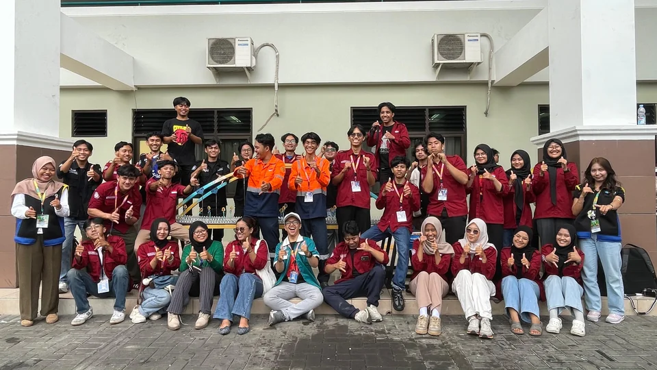
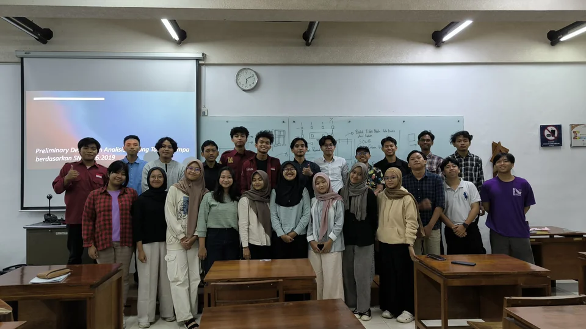
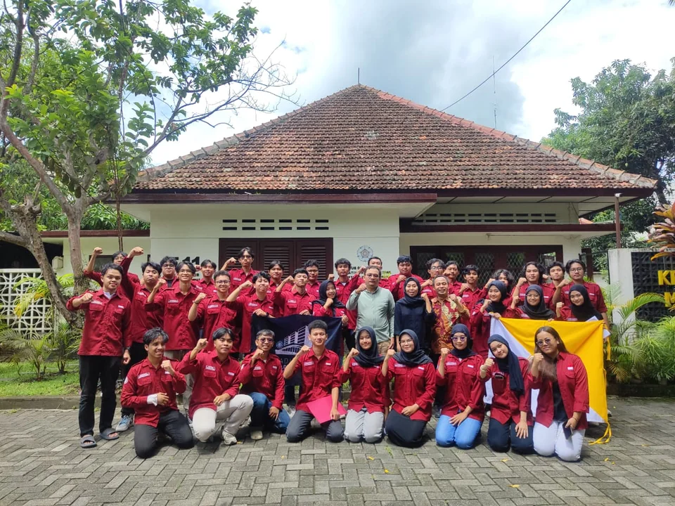

GMBB Community —
Gadjah Mada Building & Bridge
Progressed from Staff to Asset Manager to Head of Technical Department at the Gadjah Mada Building and Bridge (GMBB) Community, UGM's student organization preparing teams for national and international bridge and building design competitions.

About GMBB Community
Gadjah Mada Building and Bridge (GMBB) Community is a student organization within the Civil and Environmental Engineering Department at UGM that prepares and fields teams for national and international bridge and building design competitions. The community handles everything from structural design and BIM modeling to fabrication logistics and competition asset management.
Involvement with GMBB progressed across three roles — Staff of the Building & Asset Logistic Division, Asset Manager, and finally Head of Technical Department — reflecting a growing scope of responsibility from logistics support to leading the department directly responsible for competition-winning designs.
Role Progression
1. Staff, Building & Asset Logistic Division
Supported logistics and inventory management for building and bridge model materials, tools, and competition assets.
2. Asset Manager
Managed the community's physical assets and fabrication resources, coordinating equipment allocation across concurrent competition teams.
3. Head of Technical Department
Led the technical department overseeing bridge and building design competitions, including structural design review, BIM modeling standards, and technical mentorship for competition teams entering events such as the Fondasi Steel Bridge Competition and International Bridge Design Competition.
Responsibilities as Head of Technical Department
- Led technical department overseeing bridge and building design competitions
- Reviewed structural designs and BIM models produced by competition teams
- Mentored members on structural analysis, design software, and competition requirements
- Coordinated technical preparation across multiple concurrent competition entries

